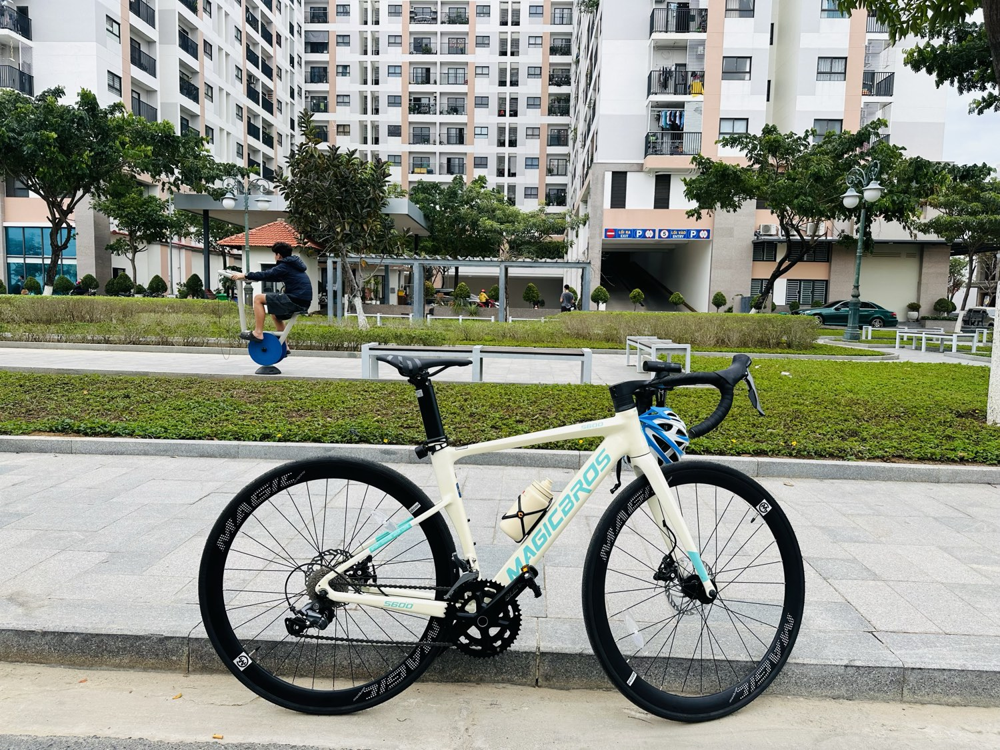

Luật Nhà ở sửa đổi 2026 đã thông qua: điểm tin BĐS tuần 16–22/11
Tuần trước tôi viết "ba luật nhà đất vẫn chờ biểu quyết". Sáng 21/11, Luật Nhà ở sửa đổi 2026, Luật Đất đai và Luật Kinh doanh bất động sản sửa đổi đã được Quốc hội thông qua, cùng có hiệu lực từ 1/7/2027. Một ngày trước đó, thuế đất bỏ hoang cũng đã thành luật. Ở Khánh Hoà, HĐND tỉnh thông qua chương trình phát triển đô thị và danh mục khu đất đấu thầu. Mỗi tin dưới đây có thêm một dòng "chạm vào ai".

Luật mới chưa áp dụng ngay — còn hơn 7 tháng tới ngày 1/7/2027.
1. Ba luật nhà đất đã thông qua: Luật Nhà ở sửa đổi 2026 và hai luật đi kèm
Sáng 21/11/2026, Quốc hội biểu quyết thông qua cả ba luật (nguồn: Bnews/TTXVN 21/11; Thị trường Tài chính Tiền tệ 21/11):
| Luật | Phiếu tán thành | Quy mô |
|---|---|---|
| Nhà ở (sửa đổi) | 467/485 đại biểu biểu quyết | 13 chương, 129 điều |
| Đất đai (sửa đổi) | 466/479 | 13 chương, 112 điều |
| Kinh doanh BĐS (sửa đổi) | 471/479 | 10 chương, 63 điều |
Nếu anh/chị đang hỏi luật đất đai sửa đổi 2026 khi nào có hiệu lực: cả ba luật có hiệu lực từ 1/7/2027 (Luật Đất đai có một số khoản áp dụng mốc riêng). Từ nay đến đó, các giao dịch vẫn theo luật hiện hành.

2. Nhà ở xã hội bán lại sau 5 năm: giới hạn người mua, không khống chế giá
Đây là điểm đổi nhiều nhất qua các vòng dự thảo. Cuối tháng 10, có ý kiến đề nghị bán lại tối đa bằng giá gốc; bản tôi tóm tắt tuần trước vẫn là phương án đó. Bản cuối được thông qua: sau 5 năm, nhà ở xã hội chỉ được bán lại cho người thuộc đối tượng được mua nhà ở xã hội, giá do các bên thoả thuận, và không phải nộp tiền sử dụng đất (nguồn: Cổng Xây dựng chính sách – Chính phủ, 21/11; CafeLand 21/11).
Chạm vào ai: người đang mua hoặc đã mua nhà ở xã hội với kế hoạch bán lại. Giá không bị chặn, nhưng tệp người mua hẹp lại — thời gian tìm người mua có thể dài hơn. Tuần trước báo chí có nêu điều khoản chuyển tiếp cho người đã trả đủ tiền trước ngày luật có hiệu lực, nhưng đó là nội dung của dự thảo; tôi sẽ đối chiếu lại khi có văn bản luật chính thức.
3. Mua nhà dự án: tiền cọc và tiến độ thanh toán
Với Luật Kinh doanh BĐS sửa đổi, các bài tường thuật nêu: tiền đặt cọc không quá 5% giá bán, giá thuê mua khi bất động sản đã đủ điều kiện kinh doanh; chủ đầu tư phải công khai thông tin pháp lý trước khi kinh doanh; hợp đồng phải ghi đúng giá giao dịch thực tế. Về khoản 5% cuối giữ lại tới khi người mua nhận sổ, các bài báo tôi đọc chưa nói rõ được như nhau — một bài viết rằng Chính phủ đề xuất giữ như hiện hành (nguồn: Bnews 21/11). Chỗ này tôi để ở trạng thái chờ đọc văn bản luật, chưa kết luận.
Chạm vào ai: người mua căn hộ, nhà phố dự án hình thành trong tương lai. Câu cần hỏi chủ đầu tư từ bây giờ vẫn là: hợp đồng ký theo luật nào, tiến độ thanh toán từng đợt bao nhiêu phần trăm, khoản nào giữ lại tới khi nhận sổ. Tôi đã viết về cách hỏi "quyết định số mấy" ở bài 18/11.
4. Thuế đất bỏ hoang 0,2%: đã thành luật, áp dụng từ 1/7/2027
Chiều 20/11, Quốc hội thông qua luật sửa đổi Luật Thuế TNDN, Luật Thuế sử dụng đất phi nông nghiệp và Luật Thuế TNCN với 475/477 đại biểu tán thành. Đất bỏ hoang chịu thuế suất 0,2%, không áp hạn mức; đất sử dụng không đúng mục đích 0,15%. Luật có hiệu lực 1/1/2027, riêng hai mức thuế này áp dụng từ 1/7/2027. Thế nào là "đất bỏ hoang" sẽ xác định theo pháp luật đất đai; Chính phủ cam kết công khai tiêu chí, cơ quan xác định trước 1/7/2027 (nguồn: CafeF 20/11).
Chạm vào ai: người đang giữ đất trống lâu năm. Người dùng đất đúng mục đích gần như không bị ảnh hưởng; người giữ đất để chờ thì có thêm một khoản chi phí giữ đất cần đưa vào bảng tính. Tiêu chí cụ thể chưa ban hành — chưa nên tự tính mình có thuộc diện hay không.
5. HĐND Khánh Hoà: 21 đô thị, 5 khu đất đấu thầu, 1 khu thí điểm nhà ở thương mại
Chiều 20/11, kỳ họp chuyên đề lần thứ 5 HĐND tỉnh khoá VIII thông qua các nghị quyết, trong đó có: chương trình phát triển đô thị 2026–2030; danh mục 5 khu đất đấu thầu dự án có sử dụng đất; 1 khu đất dự kiến thí điểm dự án nhà ở thương mại (nguồn: Báo Khánh Hoà 20/11). Chương trình đô thị theo mô hình đa trung tâm, gồm 21 đô thị: 5 đô thị định hướng loại II là Nha Trang, Phan Rang, Cam Ranh, Cam Lâm, Ninh Hoà; nhu cầu vốn khoảng 1,3 triệu tỷ đồng; mục tiêu thành phố trực thuộc Trung ương trước 2030 (nguồn: Báo Khánh Hoà 21/11).
Hai số cần lưu ý: một bài ghi kỳ họp thông qua 24 nghị quyết, một bài khác cùng báo ghi 25. Vị trí 5 khu đất đấu thầu và khu thí điểm chưa được công bố trên báo.
Chạm vào ai: người theo dõi đất đấu thầu, đấu giá. Danh sách khu đất phải đọc ở nghị quyết gốc, không đoán theo lời đồn. Con số 1,3 triệu tỷ là nhu cầu vốn của cả chương trình, không phải tiền đã có.
6. Phía nam Nha Trang: khu đô thị mở rộng phần mặt nước, Vành đai 3 có mốc khởi công
- Khu đô thị hỗn hợp thành phố Nha Trang (phường Nam Nha Trang) được điều chỉnh chủ trương ngày 16/11: thêm 16,22 ha, tổng 242,93 ha; cơ cấu 7.187 căn nhà ở thương mại và 1.500 căn nhà ở xã hội. Phần mở rộng dùng để cải tạo mặt nước, không được xây công trình, không kinh doanh, phải bàn giao cho Nhà nước, và không làm căn cứ tăng dân số hay sàn xây dựng (nguồn: VnExpress 17/11). Đọc kỹ: diện tích tăng nhưng số sản phẩm không tăng.
- Đường Vành đai 3 (5,22 km, từ Nguyễn Tất Thành tới Võ Nguyên Giáp): dự kiến trình phê duyệt quý IV/2026, khởi công quý III/2027, hoàn thành 2030; hai dự án thành phần khoảng 1.667,6 tỷ (xây dựng) và hơn 572,7 tỷ (giải phóng mặt bằng) (nguồn: Báo Khánh Hoà 18/11). Đây là kế hoạch của ban quản lý dự án, chưa phải quyết định phê duyệt.
Chạm vào ai: người xem đất, nhà phía nam Nha Trang. Mốc khởi công cách hiện tại khoảng 2 năm — đủ dài để có thể điều chỉnh; nên tính theo mốc trên văn bản phê duyệt khi có.
7. Hạ tầng và giải phóng mặt bằng: những mốc cần ghi lịch
- CCSEP – tiểu dự án Nha Trang: thu hồi 20,53 ha, 474 hộ ở ba phường Nha Trang, Bắc Nha Trang, Tây Nha Trang; còn 205 hộ chưa bàn giao; mục tiêu xong giải phóng mặt bằng cuối 2026. Vướng mắc được nêu: đơn giá bồi thường, điều kiện tái định cư, thừa kế chưa thống nhất (nguồn: Báo Khánh Hoà 20/11).
- Cầu Phú Kiểng (phường Tây Nha Trang): tổng mức đầu tư điều chỉnh từ 599,836 tỷ lên 809 tỷ đồng; cầu dài 271,2 m thay cây cầu gỗ dân tự làm khoảng 20 năm (nguồn: Báo Khánh Hoà 16/11). Bài chưa nêu mốc khởi công mới.
- Khu tái định cư Ngọc Hiệp: được điều chỉnh chủ trương; đã giải phóng 8,62 ha, khoảng 6 ha giai đoạn 1 đã xong hạ tầng, còn 4,83 ha chưa thu hồi (nguồn: Báo Khánh Hoà 17/11).
- Quy hoạch chung đô thị Khánh Hoà đến 2050 đã có thông báo công khai (Thông báo 925), hồ sơ tra cứu tại khanhhoa.gov.vn, cổng Sở Xây dựng và UBND xã, phường (nguồn: Báo Khánh Hoà 15/11).
Chạm vào ai: người mua đất có nhiều đồng thừa kế, hoặc đất gần ranh các dự án đang giải phóng mặt bằng. Vướng thừa kế ở một dự án lớn cũng là loại vướng hay gặp ở một lô đất nhỏ — tôi đã viết về hồ sơ cấp sổ lần đầu ở bài 20/11.
Điều tôi để ý nhất tuần này
Từ hôm nay, mỗi khi nói về luật với khách tôi sẽ phải nói thêm một vế: "theo luật hiện hành, và từ 1/7/2027 thì…". Hơn 7 tháng chuyển tiếp là khoảng dễ hiểu nhầm nhất: tin "đã thông qua" lan nhanh hơn chữ "có hiệu lực từ". Tôi sẽ đọc văn bản luật khi được đăng và cập nhật lại các bài liên quan.
Nguồn tham khảo
- Quốc hội thông qua 3 bộ luật lớn về đất đai, nhà ở và bất động sản — Bnews/TTXVN, 21/11/2026
- Quốc hội chính thức thông qua 3 Luật lớn về nhà ở, đất đai và bất động sản — Thị trường Tài chính Tiền tệ, 21/11/2026
- Thông qua Luật Nhà ở (sửa đổi) — Cổng Xây dựng chính sách, Chính phủ, 21/11/2026
- Quốc hội "chốt" nhà ở xã hội sau 5 năm chỉ được bán lại cho đúng đối tượng — CafeLand, 21/11/2026
- Quốc hội chốt áp thuế 0,2% với đất bỏ hoang — CafeF, 20/11/2026
- Kỳ họp chuyên đề lần thứ 5 HĐND tỉnh Khánh Hoà khoá VIII — Báo Khánh Hoà, 20/11/2026
- Kiến tạo đô thị tăng trưởng xanh, bền vững — Báo Khánh Hoà, 21/11/2026
- Khu đô thị 17.000 tỷ đồng ở Nha Trang được mở rộng thêm 16,22 ha — VnExpress, 17/11/2026
- Dự án đường Vành đai 3 sẽ được khởi công trong quý III/2027 — Báo Khánh Hoà, 18/11/2026
- Đẩy nhanh công tác giải phóng mặt bằng dự án CCSEP — Báo Khánh Hoà, 20/11/2026
- Điều chỉnh tổng mức đầu tư dự án cầu Phú Kiểng — Báo Khánh Hoà, 16/11/2026
- Gỡ vướng cho Khu tái định cư Ngọc Hiệp — Báo Khánh Hoà, 17/11/2026
- Khánh Hoà công bố công khai quy hoạch chung đô thị đến năm 2050 — Báo Khánh Hoà, 15/11/2026
Bản tin tổng hợp từ các bản tin thị trường ngày 17/11, 19/11 và 21/11/2026 tôi đã gửi khách qua Zalo, cộng một lượt tra cứu sáng 22/11 về kết quả biểu quyết ngày 21/11. Đây là tin tổng hợp từ báo chí, tôi chưa đọc văn bản luật cuối cùng; các mốc tiến độ dự án là kế hoạch, có thể thay đổi. Bài không nhằm khuyến nghị mua, bán, vay hay tham gia đấu giá. Trước khi dùng bất kỳ con số nào để ra quyết định, anh/chị nên kiểm chứng lại tại nguồn chính thức.
"Rồi, ngày mới tốt lành nhé."
Sống tử tế · Kiếm tiền hạnh phúc · Cho đi giá trị
Muốn nhận bản tin thị trường qua Zalo?
Tôi đọc tin thị trường và gửi bản tóm tắt cho khách qua Zalo vào sáng thứ Ba, thứ Năm, thứ Bảy, kèm tổng hợp cuối tuần — có ghi nguồn và nói rõ chỗ nào số liệu đang vênh. Nhắn "BẢN TIN" để nhận miễn phí.
Nhắn Zalo — 0869 668 638